- កំណត់ភាពឆ្លុះនិងរូបឆ្លុះធៀបនឹងចំណុច
- កំណត់ភាពឆ្លុះនិងរូបឆ្លុះធៀបនឹងបន្ទាត់
- កំណត់អ័ក្សឆ្លុះនៃរូបធរណីមាត្រ ។
1. ភាពឆ្លុះធៀបនឹងចំណុច
1.1 ភាពឆ្លុះធៀបនឹងចំណុច
គេមានចំណុចនិង \(\displaystyle O\) មួយ និងចំណុច \(\displaystyle M\) មួយនៅក្នុងប្លង់ ។ គេគូសអង្កត់ \(\displaystyle MO\) រួចបន្លាយខាង \(\displaystyle O\) ឱ្យបាន \(\displaystyle OM' = OM\) ។ គេបាន \(\displaystyle O\) ជាចំណុចកណ្ដាលនៃ \(\displaystyle MM'\) ហើយគេថាចំណុច \(\displaystyle M'\) ឆ្លុះ នឹង \(\displaystyle M\) ធៀបនឹងចំណុច \(\displaystyle O\) ។ ចំណុច \(\displaystyle O\) ហៅថា ផ្ចិតឆ្លុះ ។ ចំណុចឆ្លុះនៃចំណុច \(\displaystyle O\) គឺចំណុច \(\displaystyle O\) ខ្លួនឯង ។
| ជាទូទៅ ចំណុច \(\displaystyle M'\) ឆ្លុះ \(\displaystyle M\) ធៀបនឹងចំណុច \(\displaystyle O\) មួយ កាលណា \(\displaystyle O\) ជាចំណុច |
| កណ្ដាលនៃអង្កត់ \(\displaystyle MM'\) ។ |
1.2 សំណង់ចំណុច \(\displaystyle M'\) ជាចំណុចឆ្លុះនៃ \(\displaystyle M\) ធៀបនឹង \(\displaystyle O\)
ក. ការប្រើប្រាស់បន្ទាត់លេខ
គេគូសកន្លះបន្ទាត់ \(\displaystyle MO\) រួចដៅចំណុច \(\displaystyle M'\) ដោយឱ្យ \(\displaystyle OM' = MO\)
ខ. ការប្រើដែកឈាននិងបន្ទាត់
គេគូសកន្លះបន្ទាត់ \(\displaystyle MO\) និងកន្លះរង្វង់ផ្ចិត \(\displaystyle O\) កាំ \(\displaystyle OM\) ។ កន្លះរង្វង់នេះកាត់កន្លះបន្ទាត់ \(\displaystyle MO\) ត្រង់ \(\displaystyle M'\) ។
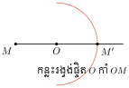
2. រូបឆ្លុះគ្នាធៀបនឹងចំណុច
គេថា \(\displaystyle A'\) ជារូបឆ្លុះនៃរូប \(\displaystyle A\) ធៀបនឹងចំណុច \(\displaystyle O\) ឬរូប \(\displaystyle A\) និង \(\displaystyle A'\) ឆ្លុះគ្នាធៀបចំណុច \(\displaystyle O\) ។
2.1 បន្ទាត់ឆ្លុះគ្នាធៀបនឹងចំណុច
រូបឆ្លុះនៃបន្ទាត់ \(\displaystyle d\) ធៀបចំណុច \(\displaystyle (O \notin d)\) គឺបន្ទាត់ \(\displaystyle d'\) ស្របបន្ទាត់ \(\displaystyle d\)
បើចំណុច \(\displaystyle O\) ស្ថិតនៅលើបន្ទាត់ \(\displaystyle d\) នោះបន្ទាត់ \(\displaystyle d'\) ត្រួតស៊ីគ្នានឹងបន្ទាត់ \(\displaystyle d\)
បើចំណុច \(\displaystyle A, B\) និង \(\displaystyle C\) រត់ត្រង់ជួរ នោះចំណុចឆ្លុះវា \(\displaystyle A', B'\) និង \(\displaystyle C'\) ក៏រត់ត្រង់ជួរដែរ ។
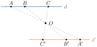
2.2 អង្កត់ឆ្លុះគ្នាធៀបនឹងចំណុច
គេមានចំណុច \(\displaystyle A', B', I'\) ជាចំណុចឆ្លុះនៃចំណុច \(\displaystyle A, B, I\) ធៀបចំណុច \(\displaystyle O\) ។ បើអង្កត់ \(\displaystyle A'B'\) ឆ្លុះអង្កត់ \(\displaystyle AB\) ធៀបចំណុច \(\displaystyle O\) នោះ \(\displaystyle A'B' \parallel AB\) និង \(\displaystyle A'B' = AB\) ។ បើ \(\displaystyle I\) ជាចំណុចកណ្ដាលនៃអង្កត់ \(\displaystyle AB\) នោះ \(\displaystyle I'\) ជាចំណុចកណ្ដាលនៃអង្កត់ \(\displaystyle A'B'\) ។
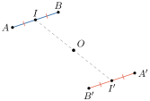
2.3 មុំឆ្លុះគ្នាធៀបនឹងចំណុច
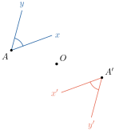
- រូបឆ្លុះនៃមុំមួយធៀបនឹងចំណុចមួយ ជាមុំមួយទៀតដែលប៉ុនគ្នា ។
គេបាន \(\displaystyle \angle x'A'y' = \angle xAy\) - រូបឆ្លុះនៃមុំកែងមួយធៀបនឹងចំណុចមួយជាមុំកែងមួយទៀត ។
| ជាទូទៅ រូបពីរឆ្លុះគ្នាធៀបនឹងចំណុចមួយជាតារូបប៉ុនគ្នា ។ |
| បន្ទាត់ពីរឆ្លុះគ្នាធៀបនឹងចំណុចមួយជាបន្ទាត់ស្របគ្នា ( បើបន្ទាត់មិនកាត់តាម |
| ផ្ចិតឆ្លុះ ) ។ |
| អង្កត់ពីរឆ្លុះគ្នាធៀបនឹងចំណុចមួយជាអង្កត់ស្របគ្នា និងប៉ុនគ្នា ។ |
| មុំពីរឆ្លុះគ្នាធៀបនឹងចំណុចមួយជាមុំប៉ុនគ្នា ។ |
សង់ត្រីកោណ \(\displaystyle EFC\) ដែលឆ្លុះនឹងត្រីកោណ \(\displaystyle ABC\) ធៀបនឹងចំណុច \(\displaystyle C\) ។ បញ្ជាក់មុំដែលមានរង្វាស់ស្មើគ្នានៅលើរូប ។
សង់ត្រីកោណ \(\displaystyle EFC\) ដែលឆ្លុះនឹងត្រីកោណ \(\displaystyle ABC\) ធៀបនឹងចំណុច \(\displaystyle C\) ។ ដោយ \(\displaystyle E\) ឆ្លុះ \(\displaystyle A\) ធៀបនឹង \(\displaystyle C\) នោះ បន្លាយអង្កត់ \(\displaystyle AC\) បាន \(\displaystyle CE = CA\)
ដោយ \(\displaystyle F\) ឆ្លុះ \(\displaystyle B\) ធៀបនឹង \(\displaystyle C\) នោះបន្លាយ \(\displaystyle BC\) បាន \(\displaystyle CF = CB\) ភ្ជាប់ \(\displaystyle EF\) គេបាន \(\displaystyle \Delta EFC = \Delta ABC\) ។
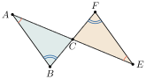
ដូចនេះ ត្រីកោណ \(\displaystyle EFC\) ឆ្លុះនៃត្រីកោណ \(\displaystyle ABC\) ធៀបនឹងចំណុច \(\displaystyle C\) ។
គូសរូបខាងស្ដាំនេះឡើងវិញ រួចសង់រូបឆ្លុះ \(\displaystyle T'\) នៃត្រីកោណ \(\displaystyle T\) ធៀបនឹងចំណុច \(\displaystyle O\) ។ តើគេអាចថាយ៉ាងម៉េចចំពោះត្រីកោណ \(\displaystyle T\) ? ហេតុអ្វី ?
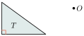
3. ភាពឆ្លុះធៀបនឹងបន្ទាត់
3.1 ចំណុចឆ្លុះធៀបនឹងបន្ទាត់
បើយកក្រដាសមួយសន្លឹក បត់ជាពីរ ។ គេយកម្ជុលចាក់ទម្លុះលើក្រដាសនោះ ត្រង់ចំណុចមួយតាងដោយ \(\displaystyle A\) រួចលាតក្រដាស ឱ្យរាបស្មើដោយតាងចំណុច \(\displaystyle A'\) ។ គេសង្កេតឃើញ គន្លាក់បត់ គេសង្កេតឃើញថា ចំណុច \(\displaystyle A'\) ឆ្លុះចំណុច \(\displaystyle A\) តាមបន្ទាត់នៃស្នាមបត់ដែលលាបពណ៌ដោយបន្ទាត់ \(\displaystyle d\) ។ គេថា ចំណុច \(\displaystyle A'\) ឆ្លុះនឹងចំណុច \(\displaystyle A\) ធៀបនឹងបន្ទាត់ \(\displaystyle d\) ។
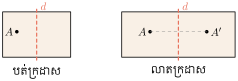
| ជាទូទៅ ចំណុច \(\displaystyle A'\) ឆ្លុះចំណុច \(\displaystyle A\) ធៀបនឹងបន្ទាត់ \(\displaystyle d\) កាលណាបន្ទាត់ \(\displaystyle d\) កែងនឹងអង្កត់ |
| \(\displaystyle AA'\) ត្រង់ចំណុចកណ្ដាល \(\displaystyle O\) ។ បន្ទាត់ \(\displaystyle d\) ហៅថាមេដ្យាទ័រនៃអង្កត់ \(\displaystyle AA'\) ។ |
បើចំណុច \(\displaystyle M \in d\) នោះចំណុចឆ្លុះ \(\displaystyle M'\) ត្រួតលើ \(\displaystyle M\) ។
3.2 សង់ចំណុច \(\displaystyle A'\) ឆ្លុះចំណុច \(\displaystyle A\) ធៀបនឹងបន្ទាត់ \(\displaystyle d\)
គេមានចំណុច \(\displaystyle A\) មួយ និងបន្ទាត់ \(\displaystyle d\) មួយ ដែល \(\displaystyle A \notin d\) នៅក្នុងប្លង់ \(\displaystyle P\) ។
សង់ចំណុច \(\displaystyle A'\) ឆ្លុះនឹងចំណុច \(\displaystyle A\) ធៀបនឹងបន្ទាត់ \(\displaystyle d\) ។
តាមចំណុច \(\displaystyle A\) គេគូសអង្កត់ \(\displaystyle AA'\) កែងនឹងបន្ទាត់ \(\displaystyle d\) ត្រង់ \(\displaystyle O\) ហើយដែល \(\displaystyle OA = OA'\) ។
គេបានចំណុច \(\displaystyle A'\) ឆ្លុះនឹងចំណុច \(\displaystyle A\) ធៀបនឹងបន្ទាត់ \(\displaystyle d\) ដែលត្រូវសង់ ។
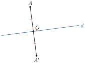
4. រូបឆ្លុះគ្នាធៀបនឹងបន្ទាត់
គេថា \(\displaystyle A'\) ជារូបឆ្លុះនៃរូប \(\displaystyle A\) ធៀបនឹងបន្ទាត់ \(\displaystyle \Delta\) ឬរូប \(\displaystyle A\) និង \(\displaystyle A'\) ឆ្លុះគ្នា ធៀបនឹងបន្ទាត់ \(\displaystyle \Delta\) ។
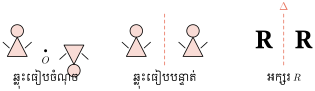
- ចំណុចឆ្លុះធៀបនឹងបន្ទាត់មួយនៃច្រើន ចំណុចដែលរត់ត្រង់ជួរ ជាចំណុចច្រើន ដែលរត់ត្រង់ជួរ ។
រូបឆ្លុះនៃអង្កត់មួយធៀបនឹងបន្ទាត់មួយ ជាអង្កត់ប៉ុនគ្នានិងអង្កត់ទីមួយ ។
\(\displaystyle A'B' = AB\) , \(\displaystyle E'F' = EF\)
គេថាអង្កត់ \(\displaystyle A'B', AB\) ឆ្លុះគ្នាធៀបនឹង បន្ទាត់ \(\displaystyle \Delta\) ហើយ \(\displaystyle E'F'\) និង \(\displaystyle EF\) ឆ្លុះគ្នាធៀបនឹង បន្ទាត់ \(\displaystyle \Delta\) ដែរ ។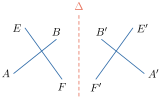
រូបឆ្លុះនៃរង្វង់ធៀបនឹងបន្ទាត់មួយជា រង្វង់មួយទៀតដែលមានកាំ ប៉ុនគ្នា :
\(\displaystyle A'B' = AB\) ។
គេថារង្វង់ផ្ចិត \(\displaystyle A\) និង \(\displaystyle A'\) ឆ្លុះគ្នាធៀបនឹងបន្ទាត់ \(\displaystyle \Delta\) ។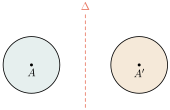
- រូបឆ្លុះនៃមុំធៀបនឹងបន្ទាត់មួយជាមុំមួយទៀតដែលប៉ុននឹងមុំទីមួយ : \(\displaystyle \angle A = \angle A'\)
\(\displaystyle \angle E_1\) និង \(\displaystyle \angle E_2\) ។ គេថាមុំ \(\displaystyle \angle A\) និង \(\displaystyle \angle A'\) ឆ្លុះគ្នាធៀបនឹងបន្ទាត់ \(\displaystyle \Delta\) ។
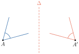
| ជាទូទៅ រូបពីរឆ្លុះគ្នាធៀបនឹងបន្ទាត់មួយជារូបប៉ុនគ្នា |
| រង្វង់ពីរឆ្លុះគ្នាធៀបនឹងបន្ទាត់មួយជារង្វង់ប៉ុនគ្នា |
| អង្កត់ពីរឆ្លុះគ្នាធៀបនឹងបន្ទាត់មួយជាអង្កត់ប៉ុនគ្នា |
| មុំពីរឆ្លុះគ្នាធៀបនឹងបន្ទាត់មួយជាមុំប៉ុនគ្នា ។ |
- ក. គូសរូបខាងស្ដាំនេះឡើងវិញ រួចសង់រូបឆ្លុះនៃរូបនេះធៀបនឹងបន្ទាត់ \(\displaystyle d\) ។
( គេយក \(\displaystyle F', O', R', C', E'\) ជាចំណុចឆ្លុះរៀងគ្នានៃចំណុច \(\displaystyle F, O, R, C, E\)) ។ - ខ. រាស់ \(\displaystyle OR\) និង \(\displaystyle O'R'\) , \(\displaystyle RE\) និង \(\displaystyle R'E'\) , \(\displaystyle OF\) និង \(\displaystyle O'F'\) រួចសន្និដ្ឋាន ។
- គ. \(\displaystyle C\) ជាចំណុចកណ្ដាលនៃអង្កត់ \(\displaystyle RE\) ។ តើគេអាចថាយ៉ាងណាដំពោះចំណុច \(\displaystyle C'\) ។
- ឃ. ចំណុច \(\displaystyle O, C, F\) រត់ត្រង់ជួរ ។ តើគេអាចថាយ៉ាងណាចំពោះចំណុច \(\displaystyle O', C', F'\) ?
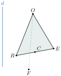
- ក.
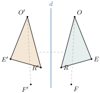
- ខ. \(\displaystyle OR = O'R'\) , \(\displaystyle RE = R'E'\) , \(\displaystyle OF = O'F'\) ។
- គ. \(\displaystyle C'\) ជាចំណុចកណ្ដាលនៃអង្កត់ \(\displaystyle R'E'\) ។
- ឃ. ចំណុច \(\displaystyle O, C, F\) រត់ត្រង់ជួរ នោះចំណុច \(\displaystyle O', C', F'\) ឆ្លុះចំណុច \(\displaystyle O, C, F\) ធៀបនឹងបន្ទាត់ \(\displaystyle d\) ក៏រត់ត្រង់ជួរដែរ ។
រង្វង់ពីរដែលមានផ្ចិតរៀងគ្នា \(\displaystyle O\) និង \(\displaystyle O'\) ប្រសព្វគ្នាត្រង់ពីរចំណុច \(\displaystyle A\) និង \(\displaystyle B\) ។
- ក. បង្ហាញថាបន្ទាត់ \(\displaystyle OO'\) ជាមេដ្យាទ័រនៃអង្កត់ធ្នូ \(\displaystyle AB\) ។
- ខ. ប្រៀបធៀប \(\displaystyle \angle OAB\) និង \(\displaystyle \angle OBA\) រួច \(\displaystyle \angle O'AB\) និង \(\displaystyle \angle O'BA\) ។
- គ. ប្រៀបធៀប \(\displaystyle \angle OAO'\) និង \(\displaystyle \angle OBO'\) ។
5. អ័ក្សឆ្លុះនៃរូបធរណីមាត្រប្លង់
5.1 រូបដែលមានអ័ក្សឆ្លុះ
ពិនិត្យមើលរូបខាងស្ដាំនេះ ។
គេសង្កេតជារូបនីមួយៗមានផ្នែកខាងឆ្វេងជារូបចម្លងនៃផ្នែកខាងស្ដាំ ។ គេថាផ្នែកខាងស្ដាំនិងខាងឆ្វេងឆ្លុះគ្នាធៀបនឹងបន្ទាត់មួយ ។ បើគេបត់រូបនីមួយៗ នោះតាមជួរគំនូសដាច់ៗ គេឃើញថាផ្នែកម្ខាងត្រួតស៊ីលើផ្នែកម្ខាងទៀត ។
បន្ទាត់ត្រង់ជួរដាច់នេះ ហៅថា អ័ក្សឆ្លុះនៃរូបនីមួយៗ ។ រូបនីមួយៗនេះ ហៅថា រូបមានអ័ក្សឆ្លុះ ។
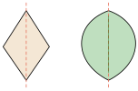
គូសអ័ក្សឆ្លុះទាំងអស់នៃរូបនីមួយៗខាងក្រោម បើអាចមាន :
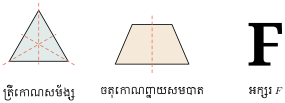
ត្រីកោណសម័ង្សមានអ័ក្សឆ្លុះបី ចតុកោណព្នាយសមបាតមានអ័ក្សឆ្លុះមួយ អក្សរ \(\displaystyle F\) គ្មានអ័ក្សឆ្លុះទេ ។
| ជាទូទៅ រូបដែលមានអ័ក្សឆ្លុះ ជារូបដែលផ្ដុំដោយផ្នែកពីរឆ្លុះគ្នាធៀបនឹងបន្ទាត់មួយ \(\displaystyle d\) |
| ហើយបន្ទាត់នេះជាអ័ក្សឆ្លុះនៃរូបនេះ ។ |
នេះជាទង់ជាតិនៃប្រទេសហ្សាម៉ាអ៊ិក ( Jamica ) ។
តើទង់ជាតិនៃប្រទេសហ្សាម៉ាអ៊ិកមានអ័ក្សឆ្លុះប៉ុន្មាន ?
ទង់ជាតិនៃប្រទេសហ្សាម៉ាអ៊ិកមានអ័ក្សឆ្លុះ 2 ។
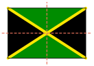
ដៅចំណុចដែលមានកូអរដោនេដូចខាងក្រោមនេះនៅលើក្រដាសការ៉ូ រួចគូសតភ្ជាប់ចំណុចទាំងនោះតាមលំដាប់ ។ រកចំនួនអ័ក្សឆ្លុះនៃរូបដែលគូសបាន ។
- ក. \(\displaystyle (0, 0)\) , \(\displaystyle (-3, 0)\) , \(\displaystyle (-3, 1)\) , \(\displaystyle (-1, 1)\) , \(\displaystyle (-1, 3)\) , \(\displaystyle (0, 3)\) , \(\displaystyle (0, 0)\)
- ខ. \(\displaystyle (2, 3)\) , \(\displaystyle (6, 3)\) , \(\displaystyle (6, 5)\) , \(\displaystyle (2, 5)\) , \(\displaystyle (2, 3)\) ។
លំហាត់
សង់ចំណុច \(\displaystyle A', B'\) និង \(\displaystyle C'\) ឆ្លុះចំណុច \(\displaystyle A, B\) និង \(\displaystyle C\) ធៀបនឹងចំណុច \(\displaystyle O\) ។
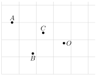
សង់ចំណុច \(\displaystyle A', B'\) និង \(\displaystyle C'\) ឆ្លុះចំណុច \(\displaystyle A, B\) និង \(\displaystyle C\) ធៀបនឹងចំណុច \(\displaystyle O\) ។ ប្រៀបធៀបមុំ \(\displaystyle \angle BAC\) និង \(\displaystyle \angle B'A'C'\) ។
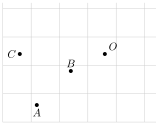
- សង់ត្រីកោណ \(\displaystyle ABC\) និងមេដ្យាន \(\displaystyle [AI]\) ។ សង់ចំណុច \(\displaystyle D, H\) ជាចំណុចឆ្លុះនៃ \(\displaystyle B, I\) ធៀបចំណុច \(\displaystyle C\) ។ តើគេអាចថា \(\displaystyle [AH]\) យ៉ាងណាដំពោះត្រីកោណ \(\displaystyle ADC\) ? ហេតុអ្វី ?
- សង់ត្រីកោណសមបាត \(\displaystyle ABC\) កំពូល \(\displaystyle A\) ។ សង់ចំណុច \(\displaystyle D\) ជាចំណុចឆ្លុះនៃ \(\displaystyle C\) ធៀបចំណុច \(\displaystyle A\) ។ តើគេអាចថាយ៉ាងណាចំពោះត្រីកោណ \(\displaystyle ABD\) ? ហេតុអ្វី ?
សង់ចំណុច \(\displaystyle A', B'\) និង \(\displaystyle C'\) ឆ្លុះចំណុច \(\displaystyle A, B\) និង \(\displaystyle C\) ធៀបបន្ទាត់ \(\displaystyle d\) ។
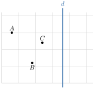
សង់ \(\displaystyle \Delta A'B'C'\) ឆ្លុះ \(\displaystyle \Delta ABC\) ធៀបបន្ទាត់ \(\displaystyle d\) ។
គូសអ័ក្សឆ្លុះនៃរូបនីមួយៗខាងក្រោម :
- ក. ត្រីកោណសម័ង្ស
- ខ. ចតុកោណកែង
- គ. ឆកោណនិយ័ត ។
ចូរបន្ថែមការេមួយទៅរូបខាងស្ដាំ ដើម្បីបានរូបថ្មីមួយដែលមានអ័ក្សឆ្លុះមួយ ។
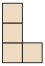
- គូសរង្វង់ពីរមានកាំប៉ុនគ្នា ។ តើរូបដែលគូសបានមានអ័ក្សឆ្លុះមួយជានិច្ចឬទេ ? បើមានតើបន្ទាត់នោះជាអ្វី ?
ខ្លឹមសារ៖ សៀវភៅពុម្ពគណិតវិទ្យាថ្នាក់ទី៧ របស់ក្រសួងអប់រំ យុវជន និងកីឡា · វាយអត្ថបទ គូររូបភាពឡើងវិញ និងរៀបចំលើអនឡាញដោយលោកគ្រូ សាន សុខលី សម្រាប់ការសិក្សាដោយឥតគិតថ្លៃ និងមិនរកប្រាក់ចំណេញ។ មិនមែនជាការបោះពុម្ពផ្លូវការរបស់ក្រសួងទេ។